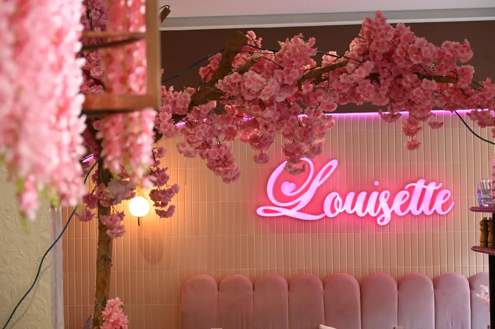
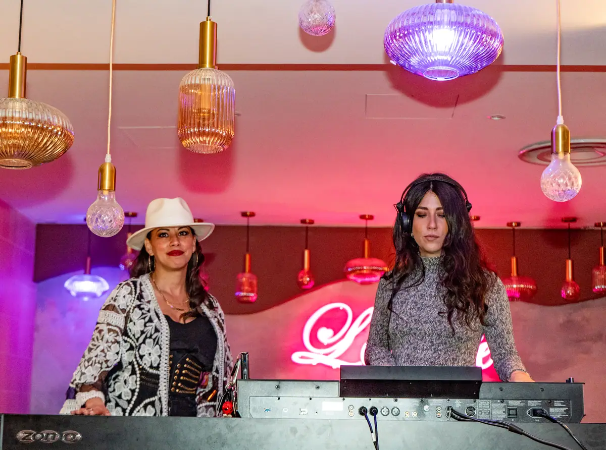

Avant le lever
de rideau.
Depuis les cafés-concerts du XIXe siècle, les Grands Boulevards sont le théâtre de Paris. Louisette en est la loge : on y dîne avant la représentation, on y trinque après les applaudissements.
Le soir


Les salles autour de la maison.
Théâtres, cinémas, comedy clubs et music-halls : le patrimoine du spectacle parisien commence devant la terrasse. Toutes les distances de cette page ont été mesurées le 10 septembre 2026 sur le réseau piéton depuis le 8 boulevard Saint-Denis — pas estimées à vue. Chaque fiche ouvre l'itinéraire à pied d'un clic.
À trois minutes ou moins.
Sept salles. Sept. On finit le dessert, on met son manteau, on y est.
Notre voisin immédiat : 934 places, plus une seconde salle de 154. On sort de table, on traverse le boulevard, on est assis.
Six cents places dans une salle à l'italienne du boulevard, pour la comédie et les pièces contemporaines.
Deux salles et un gradin qui se déplace : théâtre, musique, danse et cirque dans la même semaine.
Mille cinquante places sur quatre étages, monument historique depuis 1992. La plus grande salle du boulevard.
Cinéma d'art et essai et salle de spectacle, deux écrans, une programmation qui change tous les jours.
Salle à l'italienne inscrite monument historique en 1989, théâtre de texte et grandes adaptations.
Café-théâtre culte : comédie, one-man-show et impro, rue du Faubourg-Saint-Martin.
Entre quatre et huit minutes.
Le temps d'un café au comptoir avant de partir.
Comédie de boulevard, trois ou quatre spectacles à l'affiche, boulevard Saint-Martin.
Cinéma d'art et essai de 1956, deux salles, séances tard le soir.
Musiques actuelles, arts numériques et expositions. Tous les espaces ont rouvert le 13 janvier 2026.
Café-concert de 1876 devenu salle de concert et club, rue du Château-d'Eau.
Une petite salle d'une soixantaine de places pour l'humour et le stand-up : on en sort à deux pas d'ici.
Trois salles, dont une grande de huit cents places : comédies musicales, humour et jeune public.
Cent soixante places assises pour le stand-up, quatre à six soirs par semaine.
Jazz, soul, funk et musiques du monde depuis 1981, presque tous les soirs.
Deux mille sept cent deux places et le plus grand écran d'Europe. Façades, toitures et décor de la salle inscrits monument historique en 1981.
Le club de musiques électroniques sous le Grand Rex, du jeudi au samedi.
Théâtre et comedy club à l'angle de la place, one-man-shows et comédies.
Un quart d'heure de marche.
Par les Grands Boulevards, sans changer de trottoir ou presque.
Comédies et pièces populaires, boulevard Poissonnière.
Salle unique à grand écran, une des meilleures projections de Paris.
Lieu de spectacle depuis 1770, boulevard du Temple : théâtre, humour et magie.
Halle de 1863 : salons, expositions, danse, sport. Plus de deux cent trente événements par an.
Salle historique du boulevard Montmartre.
Le music-hall légendaire, pour prolonger après le spectacle.
Plus loin, mais on y va.
Vingt minutes de marche, ou trois stations de métro.
Le théâtre de boulevard dans sa tradition.
Danse et théâtre contemporain, place du Châtelet.
Dîner avant, sans regarder l'heure.
La cuisine est servie en continu à partir de 8 h. Arrivez à 19 h, prenez une entrée, un plat et un dessert, et rejoignez votre salle en quelques minutes de marche. Indiquez-nous l'heure de votre représentation au moment de réserver : nous organisons le service en conséquence.
Pour les sorties en groupe — comité d'entreprise, association, anniversaire au théâtre — la page groupes détaille les formats et les capacités.
Après le rappel.
Quand les salles s'éteignent, la maison s'allume. Cuisine servie tard, cocktails au comptoir, DJ les soirs de fin de semaine : de quoi refaire le spectacle autour d'un verre jusqu'à 2 h du matin, sans quitter le quartier.
Le dernier métro, les bus de nuit, les stations Vélib' et les parkings couverts sont détaillés sur la page infos pratiques.
Une table avant le spectacle ?
Précisez l'heure du lever de rideau, on cale le service dessus.
Les dates qui valent le déplacement.
Vingt-sept salles de spectacle sont à un quart d'heure de la maison, et le comptoir a ses soirées. Une fois par mois, nous envoyons les dates à retenir : les DJ, les soirées, ce qui change à la carte. Rien d'autre.
Vous vous désinscrivez en un clic. Votre adresse ne part chez personne, et ne sert qu'à ça.
M’inscrire — ouvre votre messagerie
Le message est déjà rédigé : il ne reste qu’à l’envoyer, et il vaut preuve de votre accord. Si votre téléphone n’ouvre rien, écrivez-nous à contact@louisette-paris.com. Voir la politique de confidentialité.